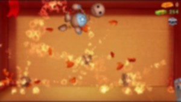

About Kick theBdy
Kick theBdy is a ragdoll-bashing arcade game from Happy Racing co-creator Chill Fleet. The goal is to use a variety of weapons and other objects, aka 'Stuff,' to beat up a surprisingly optimistic and only temporarily killable doll. While advertised more as a stress reliever than an actual game, Kick the Buddy does feature unlockables and achievements to work towards, as well as a pseudo-point system via the Bucks earned for clobbering Buddy.